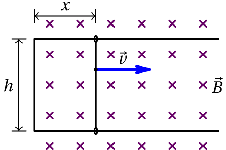
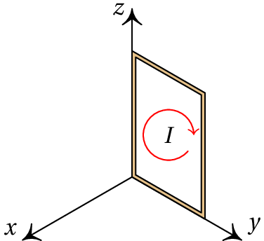
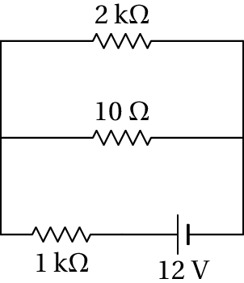

A energia eólica é uma das fontes de energia renováveis que estão a ser utilizadas para reduzir a contaminação produzida pelos combustíveis fósseis. Portugal é um dos países em que a energia de origem eólica corresponde a uma maior percentagem da energia elétrica total, com aproximadamente 9%. Independentemente do tipo de combustível ou fonte de energia usada para gerar energia elétrica, em quase todos os casos é gerada energia mecânica de rotação que é logo usada para gerar eletricidade. O princípio que permite transformar a energia mecânica de rotação em eletricidade é a indução eletromagnética. Viu-se no capítulo anterior que quando circula corrente por uma bobina que está dentro de um campo magnético, esta tem uma tendência a rodar; a indução eletromagnética é o efeito inverso: numa bobina que se faz rodar dentro de um campo magnético é induzida uma corrente elétrica.
Considere-se uma barra condutora em movimento num campo magnético uniforme, , como na figura 9.1. Sobre cada partícula com carga do condutor atua a força magnética
Essa força faz deslocar as cargas de condução no condutor e na situação da 9.1, acumular-se-á carga positiva em P e negativa em Q, qualquer que for o sinal das cargas de condução. Contudo, se o problema for analisado do ponto de vista do referencial que se desloca com o condutor (9.2), este está em repouso e, portanto, não há força magnética sobre as cargas. Como se explica então o movimento das cargas na barra?
O problema é que a equação 9.1 não pode ser válida em qualquer referencial, porque a velocidade é diferente em diferentes referenciais inerciais, mas a segunda lei de Newton implica que a força deve ser a mesma em qualquer referencial inercial.
A equação 9.1 é correta apenas no referencial em que o campo magnético é estático (não muda com o tempo). A solução do problema é que os campos elétrico e magnético não são independentes, e a força 9.1 é apenas uma parte da equação geral para a força eletromagnética, que deverá dar o mesmo resultado em qualquer referencial inercial:
No referencial que se desloca com a barra (ver figura 9.2), é nulo, porque a velocidade da barra é nula. Mas o movimento das linhas de campo magnético, com velocidade , produz campo elétrico induzido, , e força . Comparando com a força obtida no referencial em que o campo magnético é estático e não há campo elétrico (equação 9.1), conclui-se que o campo induzido é:
É como se no condutor existisse uma f.e.m. induzida, igual à diferença de potencial entre os seus extremos. Sendo o comprimento da barra, a f.e.m. induzida é:
Uma barra condutora desliza sobre dois trilhos metálicos horizontais, unidos numa extremidade como, na figura. A distância é igual a 3.3 cm e no instante a barra encontra-se a uma distância cm da extremidade dos trilhos. Para a velocidade da barra é uniforme com módulo cm/s e no sentido indicado na figura, permanecendo sempre em contacto com os trilhos de forma que possa circular corrente por eles e pela barra. (a) Sabendo que os trilhos e a barra são fios cilíndricos de cobre com diâmetro de 1.2 mm, calcule a resistência total do circuito em função de , para (admita que a temperatura é 20 °C). (b) Se existir um campo magnético externo, constante e uniforme, com módulo G, no sentido indicado na figura, calcule a corrente no circuito em função do tempo, para .
Resolução. (a) O circuito neste caso é um retângulo com arestas e . O comprimento total do fio que constitui o circuito é
A distância aumenta com o tempo segundo a equação:
onde cm e cm/s. A área da secção transversal do fio é , onde cm é o raio do fio. A resistividade do cobre a 20 °C é ·cm e a resistência do fio que forma o circuito é
em mΩ, se for medido em segundos. (b) Na barra em movimento existe uma f.e.m. induzida:
e a intensidade da corrente no circuito é
que em unidades SI, dá:
em mA.
Um tipo de gerador de tensão contínua, inventado por Faraday, consiste num disco condutor, de raio , que roda com velocidade angular dentro de um campo magnético perpendicular a ele (figura 9.3).
No referencial que roda com o disco, existe um campo elétrico induzido na direção radial, com módulo igual a
A diferença de potencial entre os pontos P e Q na figura 9.3 é
e colocando duas escovas condutoras em contato com os pontos P e Q obtém-se uma fonte de força eletromotriz.
A equação 9.3 para o campo elétrico induzido não só se aplica a condutores em movimento, como a qualquer referencial que se desloque com velocidade em relação a um sistema onde as linhas de campo aparecem como fixas no espaço. Do ponto de vista desse referencial, as linhas de campo deslocam-se com velocidade e sempre que houver alteração das linhas de campo magnético, surgirá campo elétrico induzido.
Outra situação em que há alteração das linhas de campo magnético é quando o campo magnético é variável, dando origem a um campo elétrico induzido. Uma expressão geral que inclui quer as situações em que o referencial se desloca em relação ao campo, quer as de campo magnético variável, é a lei de Faraday:
Numa espira condutora C, sempre que o fluxo magnético através da superfície delimitada por C varia, surge uma força eletromotriz induzida ao longo da espira, igual à derivada do fluxo em ordem ao tempo.
O fluxo magnético , através da superfície S delimitada pela espira, define-se de forma análoga ao fluxo do campo elétrico. Se o campo for uniforme sobre o plano da espira, com módulo constante e formando um ângulo com o versor perpendicular à espira, o fluxo magnético é
onde é a área da espira. Se o campo não for uniforme, é preciso dividir a espira em pequenos elementos diferenciais e somar todos os fluxos infinitesimais, obtendo-se um integral de superfície.
O versor perpendicular à espira, , pode ser escolhido a apontar para qualquer dos dois lados da superfície; o versor que for escolhido, define o sentido positivo da corrente na espira, usando a regra da mão direita (figura 9.4). O sinal obtido no lado direito da equação 9.7 indica o sentido do campo induzido na espira, tendo em conta que o sentido positivo é o que segue a regra da mão direita em relação ao versor .
O sentido do campo induzido pode também ser determinado pela lei de Lenz:
A força eletromotriz e o campo induzido são sempre no sentido que produz um campo magnético induzido que contraria a variação do fluxo magnético externo.
Tal como no caso do campo elétrico (nas regiões onde não há cargas) ou do escoamento de um fluido incompressível, o fluxo é o mesmo através de todas as superfícies atravessadas pelas mesmas linhas de campo. As linhas de campo magnético que passam pela periferia de uma secção conexa de uma superfície delimitam uma região do espaço que é um tubo de fluxo magnético constante.

Um exemplo de aplicação da lei de Faraday é o caso de um íman que se aproxima de um anel condutor, com velocidade . O movimento do íman implica variação do fluxo magnético através do anel.
Na situação representada na figura 9.5, o fluxo magnético no anel é no sentido da esquerda para a direita e está a aumentar. Aparece então corrente induzida no anel, dando origem a fluxo magnético da direita para a esquerda, que contraria o aumento do fluxo externo. Como tal, o campo magnético induzido aponta para a esquerda, o que implica que a corrente e a f.e.m. induzidas no anel são no sentido indicado na figura. É como se tivesse sido ligada uma pilha no anel.
Uma espira condutora retangular com lados de 20 cm e 30 cm encontra-se sobre o plano O , com um vértice na origem, como mostra a figura. A partir do instante aparece na região onde se encontra a espira um campo magnético variável com componentes (unidades SI):
(a) Calcule a f.e.m. induzida na espira, em função do tempo , a partir do instante . (b) Diga (justificando) qual é o sentido da corrente induzida na espira.
Resolução. (a) Como o campo é uniforme pode-se usar a equação 9.8. A espira é perpendicular ao eixo dos e pode-se escolher o versor normal à espira igual a ; assim sendo, o produto será a componente do campo e o fluxo magnético através da espira é
A f.e.m. induzida calcula-se usando a lei de Faraday
(em volts, se for dado em segundos).
(b) Como é positivo, o valor de calculado na alínea anterior é sempre negativo. Isso quer dizer que a corrente induzida é no sentido oposto do sentido usado para definir o versor normal à espira. A escolha de implica que se está a percorrer a espira no sentido anti-horário, vista desde o semieixo positivo dos . A corrente induzida é então no sentido dos ponteiros do relógio, como mostra a figura ao lado.
Outra forma de obter o sentido da corrente consiste em observar que o campo inicialmente aponta no sentido negativo do eixo dos , mas está sempre a aumentar no sentido positivo do eixo dos . O campo induzido deve contrariar esse aumento, apontando no sentido negativo do eixo dos . Pela regra da mão direita, um campo magnético induzido no sentido negativo do eixo dos implica corrente induzida em sentido dos ponteiros do relógio.
Um gerador de tensão alternada (figura 9.6), consiste numa bobina que se faz rodar dentro de um campo magnético; o fio onde começa a bobina está soldado a um anél condutor e o fim do fio, depois de ser enrolado na bobina, solda-se a outro anel condutor; esses dois anéis mantêm o contato com duas escovas, P e Q, enquanto a bobina roda, de forma que é igual à diferença de potencial na bobina.
O fluxo magnético através da bobina é:
onde é o número de espiras, o campo magnético médio, a área de cada espira, e o ângulo médio entre o campo e a normal à bobina.
Se a bobina roda com velocidade angular constante, , o ângulo , em função do tempo, é dado por . Como tal, a derivada do fluxo magnético em ordem ao tempo é
onde . A expressão 9.10 dá a diferença de potencial entre as duas escovas condutoras, em função do tempo e é designada tensão alternada. A diferença de potencial oscila entre um valor máximo positivo e um valor mínimo negativo . A frequência da tensão alternada, , é o número de oscilações por unidade de tempo.
O gerador de tensão alternada, também chamado alternador, usa-se para gerar energia elétrica a partir de energia mecânica. A fonte da energia mecânica, que faz rodar a bobina, pode ser o vento, nas centrais de energia eólica, a corrente de água, nas centrais hidroelétricas, o fluxo de vapor de água evaporada por combustão de carvão, o movimento do motor, no alternador usado para recarregar a bateria num automóvel, etc.
É importante regular a velocidade de rotação da bobina, de forma a manter uma velocidade angular constante, para que a tensão elétrica produzida tenha uma frequência constante. É por isso que as aspas num moinho de vento de uma estação eólica rodam lentamente e com velocidade angular constante. Existe um mecanismo mecânico usado para regular essa velocidade.
Num circuito a corrente dá origem a campo magnético e, portanto, a fluxo magnético. Como tal, qualquer variação da corrente dá origem a uma força eletromotriz induzida no circuito.
Por exemplo, quando se fecha um interruptor num circuito de corrente contínua, a corrente não aumenta instantaneamente de zero até um valor final, devido à indutância do circuito. A tendência da corrente para aumentar bruscamente é contrariada por uma corrente induzida oposta, que impõe o aumento da corrente de forma gradual. Igualmente, quando se abre o interruptor, a corrente não passa a ser nula de forma instantânea mas sim gradual.
Imaginem-se dois circuitos, lado a lado (figura 9.7). No primeiro circuito há uma fonte de tensão que produz corrente e uma resistência variável que permite alterar a intensidade dessa corrente. No segundo circuito não há nenhuma fonte de tensão.
A corrente no circuito 1 (lado esquerdo) origina fluxo magnético através do circuito 2, diretamente proporcional à corrente que produz esse campo magnético:
onde é uma constante chamada indutância mútua, que depende da forma dos circuitos e da distância entre eles.
A variação da corrente no circuito 1 induz força eletromotriz no circuito 2:
No sistema internacional, a unidade da indutância (V·s/A) é o henry, representado pela letra H, em homenagem ao físico Joseph Henry (1797–1878).
A corrente numa bobina produz campo magnético que atravessa as espiras da bobina, como mostra a figura 9.8. Como tal, a bobina produz fluxo magnético através de si própria e qualquer alteração da corrente na bobina dá origem a variação desse fluxo, produzindo força eletromotriz induzida na bobina, que contraria a alteração da corrente.
O campo magnético produzido pela bobina é diretamente proporcional à corrente. Como tal, o fluxo magnético produzido pela bobina sobre si própria é proporcional à corrente:
e a constante é a indutância da bobina. A f.e.m. autoinduzida na própria bobina é:
Quanto maior for a área das espiras na bobina, maior é a sua indutância. Quanto maior for o número de espiras, , na bobina, maior será também a área atravessada pelas linhas de campo e maior será também o próprio campo magnético. Como tal, a indutância de uma bobina com espiras é diretamente proporcional a . A indutância da bobina é vezes a indutância de cada uma das suas espiras por separado:
Todos os dispositivos têm indutância, mas geralmente essa indutância tem valor muito baixo que pode ser ignorado, exceto no caso das bobinas, usadas nos circuitos quando é necessário ter indutância não desprezável. A f.e.m. autoinduzida 9.14 num dispositivo, representa-se num circuito de alguma das duas formas indicadas na figura 9.9. O símbolo usado no lado direito chama-se indutor, e em relação aos sinais usados na figura, a voltagem no indutor é: (o sinal positivo é devido à troca dos sinais em relação ao diagrama do lado esquerdo)
Tal como a indutância mútua, a indutância mede-se em henrys no sistema internacional de unidades.
Num circuito de corrente contínua, com fontes de tensão contínua, as correntes atingem o estado estacionário em que permanecem constantes. No estado estacionário, a equação 9.16 implica que em todos os indutores no circuito a voltagem é nula, mas a corrente pode ter qualquer valor. Isso implica que, no estado estacionário, os indutores podem ser considerados curtos-circuitos (fios com resistência nula).
Em qualquer instante em que se altera o estado estacionário, por ligar ou desligar alguma fonte, ou por abrir ou fechar algum interruptor, a corrente nos indutores não muda de forma instantânea, porque de acordo com a equação 9.16 qualquer aumento instantâneo da corrente implica voltagem infinita, que é impossível. A corrente nos indutores varia sempre de forma contínua, enquanto que nas resistências, condensadores e fontes pode ser descontínua nos instantes em que se altera o estado estacionário. Mas a derivada da corrente nos indutores nesses instantes não é nula, devido à alteração introduzida no circuito. Como tal, a voltagem pode ter qualquer valor nesses instantes, e a corrente mantém o mesmo valor que tinha no estado estacionário.
Conclui-se então que em qualquer instante em que é feita alguma mudança repentina no circuito, a voltagem num indutor pode ter qualquer valor, mas a corrente deverá ter o mesmo valor que tinha imediatamente antes da mudança ter acontecido. Se no instante em que se altera o estado estacionário do circuito a corrente no indutor é nula, o indutor é equivalente a um interruptor aberto, onde a corrente é nula, mas a voltagem pode ter qualquer valor.
Após o instante em que há uma alteração repentina do circuito, as correntes nos indutores mudam gradualmente (resposta transitória). Mas como não podem mudar indefinidamente, o circuito volta a atingir o estado estacionário em que as correntes nos indutores têm valores finais constantes. Para calcular esses valores finais das correntes, os indutores podem ser substituídos por curtos-circuitos (estado estacionário).
Uma bobina com resistência de 10 Ω e indutância de 1 H é ligada a duas resistências e a uma fonte de 12 V, como indica o diagrama. Encontre a corrente na resistência de 2 kΩ, no instante em que se fecha o interruptor e muito tempo após esse instante inicial. Determine a razão entre as correntes inicial e final nessa resistência.
Resolução. Como antes de ser fechado o interruptor não passa corrente pelo indutor, no instante inicial o indutor é equivalente a um interruptor aberto, ou seja, não circula corrente pela resistência de 10 Ω e é como se essa resistência e o indutor não existissem. Ignorando esses dois elementos, o circuito corresponde a uma única malha com a fonte e as duas resistências de 1 kΩ e 2 kΩ em série. Nessas condições, a corrente inicial nessas duas resistências é
Para calcular a corrente final, substitui-se o indutor por um curto-circuito:
as resistências de 2 kΩ e 10 Ω estão em paralelo, podendo ser substituídas por uma única resistência com valor 2000 || 10 = 2/201 kΩ, que fica em série com a resistência de 1 kΩ e a resistência equivalente entre os terminais da fonte é
a corrente final que sai da fonte é mA e a diferença de potencial na resistência de 2 kΩ é
a corrente final na resistência de 2 kΩ é:
A razão entre as correntes inicial e final é:
O exemplo anterior mostra uma das propriedades importantes dos indutores que os torna muito úteis como balastros, dispositivos em que a corrente inicial é elevada mas a corrente final é muito menor. Os balastros são usados nas lâmpadas fluorescentes em que é necessária uma corrente elevada quando a lâmpada é ligada, para garantir a ionização do gás dentro do tubo tornando-se condutor; após a ionização do gás, se a corrente mantivesse o valor inicial elevado, a lâmpada queimava-se.
A figura 9.10 mostra o circuito usado para controlar uma lâmpada fluorescente, inventado por Nikola Tesla (1856–1943). Neste caso a fonte de alimentação é de tensão alternada. O balastro é a bobina G; como a sua resistência interna costuma ser baixa, foi ignorada no diagrama e as barras paralelas a tracejado representam um núcleo de material ferromagnético colocado dentro da bobina para aumentar a sua indutância. Inicialmente, o gás dentro do tubo A é isolador, porque não está ionizado; a corrente passa pelos dois filamentos F, que aquecem o gás, facilitando a produção de iões.
Dentro do arrancador C, há uma lâmina metálica curva, que com a passagem da corrente é aquecida e dilata, mudando a sua curvatura. Isso faz com que o interruptor em D seja aberto, deixando de passar corrente pelos filamentos e arrancador, mas passando através do tubo A, onde o gás já foi ionizado.
Um outro efeito da bobina G é que no instante em que o interruptor D é aberto, a corrente não cai imediatamente para zero; continuam a acumular-se cargas nos dois terminais do interruptor aberto, criando-se um campo elevado que pode produzir faíscas. Para evitar essas faíscas, que podem queimar o metal, liga-se um condensador E, em paralelo, que acumula cargas de forma segura.
As atuais lâmpadas economizadoras de energia são também lâmpadas fluorescentes, em versão reduzida. As funções do balastro e o arrancador são garantidas por um pequeno circuito dentro da lâmpada, como pode ser visto na figura 9.11.
(Para conferir a sua resposta, clique nela.)


Perguntas: 1. B. 2. C. 3. E. 4. E. 5. C.
Problemas
O peso faz acelerar o comboio. Se o motor for usado como gerador (travão eletromagnético) a energia potencial gravítica pode ser convertida em energia elétrica.
(clique para continuar)
O peso faz acelerar o comboio, sendo necessário travar. O motor pode ser usado como gerador (travão eletromagnético) para transformar energia potencial em energia elétrica.
(clique para continuar)
Nas descidas, o peso faz acelerar o comboio, sendo desnecessário o motor elétrico.
(clique para continuar)
O peso faz acelerar o comboio, sendo necessário travar. O motor pode ser usado como gerador (travão eletromagnético) para transformar energia potencial em energia elétrica.
(clique para continuar)
A unidade SI de campo magnético é o tesla (T) e não o gauss (G).
(clique para continuar)
A unidade SI de campo magnético é o tesla (T) igual 10−4 G.
(clique para continuar)
(clique para continuar)
A diferença de potencial induzida é igual ao campo induzido, vezes o comprimento da barra.
(clique para continuar)
A diferença de potencial induzida é igual ao campo induzido, vezes o comprimento da barra.
(clique para continuar)
O fluxo magnético através da espira permanece constante.
(clique para continuar)
O fluxo magnético através da espira permanece constante.
(clique para continuar)
O fluxo magnético através da espira permanece constante.
(clique para continuar)
O fluxo magnético através da espira permanece constante.
(clique para continuar)
O fluxo magnético através da espira permanece constante.
(clique para continuar)
A diminuição do número de espiras faz diminuir a indutância.
(clique para continuar)
A indutância de qualquer dispositivo não depende da corrente.
(clique para continuar)
A indutância de qualquer dispositivo não depende da corrente.
(clique para continuar)
A indutância de qualquer dispositivo não depende da corrente.
(clique para continuar)
(clique para continuar)
(clique para continuar)
(clique para continuar)
(clique para continuar)
(clique para continuar)
(clique para continuar)
Nas descidas, o peso faz acelerar o comboio, sendo desnecessário o motor elétrico.
(clique para continuar)